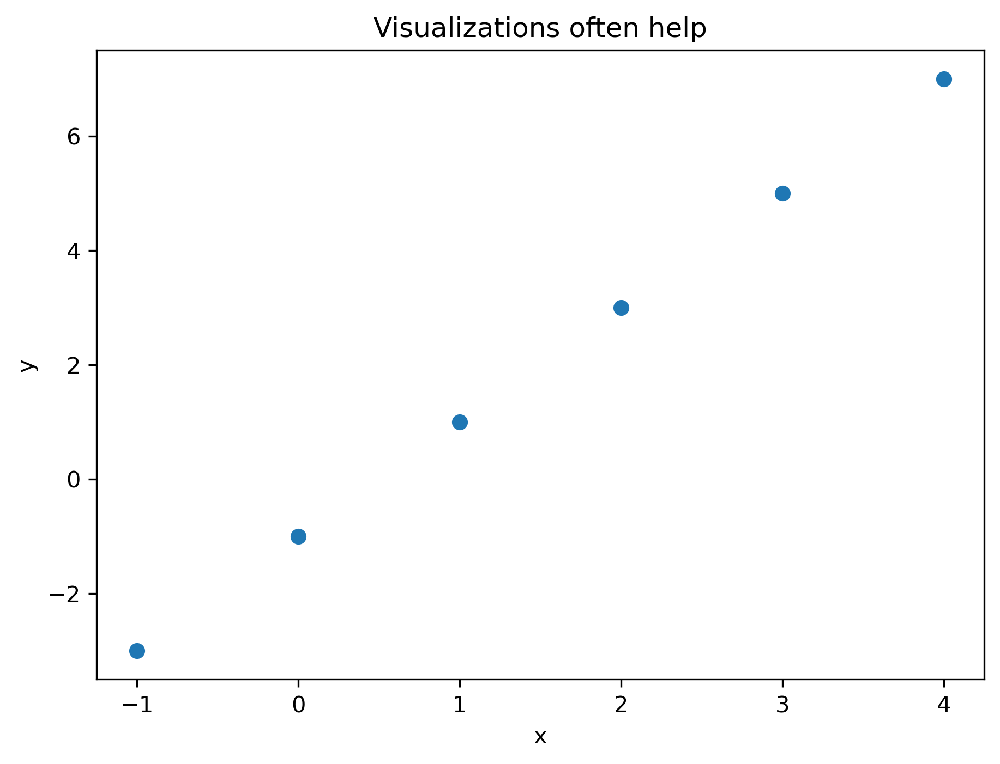
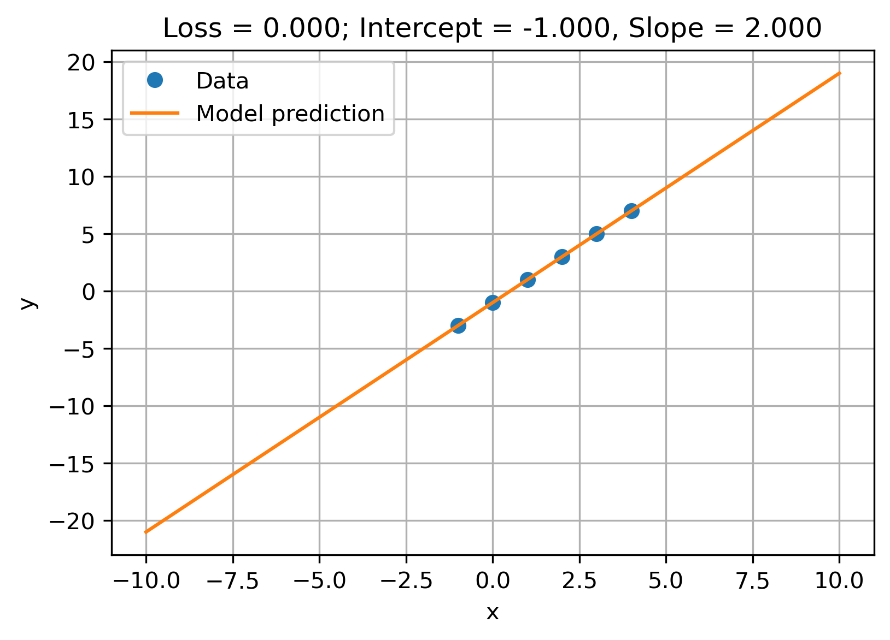
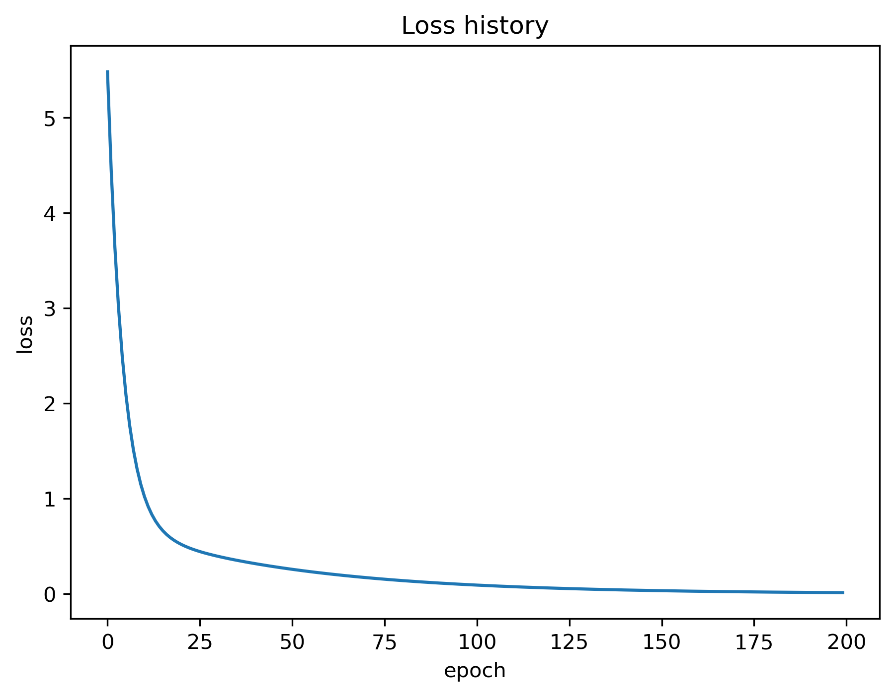

Code
import numpy as np
x = np.array([-1, 0, 1, 2, 3, 4]) # Data
y = np.array([-3, -1, 1, 3, 5, 7]) # Answer
Can we write a program to do the same?
Quiz (5 min): A simpler challenge: Find the rule \(y = f(x)\) for x and y below
import numpy as np
x = np.array([-1, 0, 1, 2, 3, 4]) # Data
y = np.array([-3, -1, 1, 3, 5, 7]) # Answer
Notice: a more realistic scenario would allow for errors: \(y = f(x) + \epsilon\)
\[ \begin{align} \mbox{Linear model:} ~~~& y=f(x_i; a,b) = a + b x_i \\ \\ \mbox{2 Paramters:} ~~~& \theta = (a,b) ~~~~\mbox{same for all } x_i \end{align} \]
\[ \begin{align} L(\theta) = \sum_i (y_i - f(x_i;\theta))^2 \to \mbox{minimize!}\\ \underset{\theta}{\mbox{argmin}} ~L(\theta) \longrightarrow \hat{\theta} \end{align} \]
\[ \hat{\theta} = (a,b) = (-1,2) \]
run best model for new values, e.g. \(x= (10, -40, \ldots)\)
x_new = np.array([10, -40])
y_new = -1 + 2.0*x_new
print('predictions: ', x_new, "->", y_new)predictions: [ 10 -40] -> [ 19. -81.]from sklearn import linear_model
from sklearn.metrics import mean_squared_error
lm = linear_model.LinearRegression() # define model
xr = x.reshape(-1,1) # define data (+restructuring for specific tool)
lm.fit(xr, y)
# report fit
print('Fitted Parameters ', lm.intercept_, lm.coef_)
yp = lm.predict(xr) # prediction
MSE= mean_squared_error(y, yp) # evaluate fit. other scores: R2=lm.score(xr, y)
print('Mean Squared Error: ', MSE)
# predict y for some new x
x_new = np.linspace(-10, 10, 20)
y_new = lm.predict(x_new.reshape(-1,1))Fitted Parameters -1.0 [2.]
Mean Squared Error: 0.0title_str = f"Loss = {MSE:.3f}; Intercept = {lm.intercept_.item():.3f}, Slope = {lm.coef_.item():.3f}"
plt.figure(figsize=(6,4))
plt.plot(x, y, 'o', label="Data")
plt.plot(x_new, y_new, label="Model prediction")
plt.xlabel("x")
plt.ylabel("y")
plt.title(title_str)
plt.legend()
plt.grid(True)
plt.show()
Learn parameters by iterative improvements
\[ \begin{array}{ll} \textbf{Input:} & \{(x_1, y_1), (x_2, y_2), \ldots, (x_n, y_n)\} \\ \textbf{Initialize:} & \theta \text{ randomly} \\ \textbf{Repeat:} & \\ & y_{\mathrm{pred}} \gets f(x; \theta) \\ & L \gets L(y_{\mathrm{pred}}, y) \\ & \theta \gets \text{update}(\theta, L) \\ \textbf{Until:} & \text{stopping criterion is met} \end{array} \]
import numpy as np
import torch
print('torch version:', torch.__version__)
# convert to tensor, type and reshape to column vector
x_t = torch.as_tensor(x, dtype=torch.float32).view(-1, 1)
y_t = torch.as_tensor(y, dtype=torch.float32).view(-1, 1)
model = torch.nn.Linear(1,1) # define black box model (1 input and 1 output)
loss_func = torch.nn.MSELoss()
optimizer = torch.optim.SGD(model.parameters(), lr=0.01)
# training loop
losses = []
model.train()
for epoch in range(200):
y_pred = model(x_t) # model prediction
loss = loss_func(y_pred, y_t) # model loss
optimizer.zero_grad() # initalizations
loss.backward() # calculate new parameters
optimizer.step() # update parameters
losses.append(loss.item()) # track loss history
# finished training. inspect model
print(f'Mean Squared Error (loss) = {loss.item():.5f}')
print('Trained Parameters')
print(f'PyTorch: intercept = {model.bias.item():.3f}, slope={model.weight.item():.3f}')
print(f'sklearn: intercept = {lm.intercept_.item():.3f}, slope={lm.coef_.item():.3f}')torch version: 2.7.1
Mean Squared Error (loss) = 0.01165
Trained Parameters
PyTorch: intercept = -0.859, slope=1.954
sklearn: intercept = -1.000, slope=2.000torch.Tensorplt.figure()
plt.plot(losses)
plt.ylabel('loss')
plt.xlabel('epoch')
plt.title('Loss history')
plt.show()
Even though our current best model is not very good, we already have a blackbox that allows us to make prediction for any new data \(x\). Like so:
# define some new input data x_new
x_new = np.linspace(-10, 10, 20)
x_t = torch.as_tensor(x_new, dtype=torch.float32).view(-1, 1)
# blackbox predcition
y_new = model(x_t) intercept = model.bias.item()
slope = model.weight.item()
title_str = f"Loss = {loss.item():.3f}; Intercept = {intercept:.3f}, Slope = {slope:.3f}"
plt.figure(figsize=(6,4))
plt.plot(x, y, 'o', label="Data")
plt.plot(x_new, y_new.detach(), label="Model prediction")
plt.xlabel("x")
plt.ylabel("y")
plt.title(title_str)
plt.legend()
plt.grid(True)
plt.show()neuron calculating a linear function.